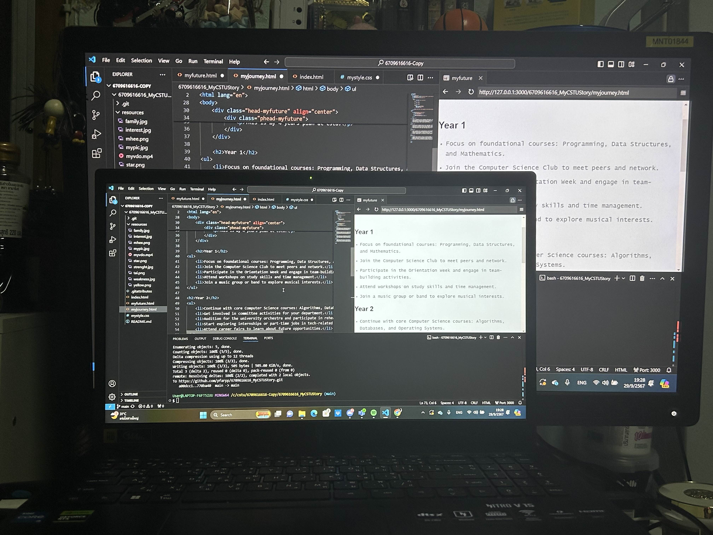

HOMEPAGE
MY FUTURE
MY JOURNEY
★ My Journey ★
This is my 4 years plan at cstu.
Year 1

Focus on foundational courses: Programming, Data Structures, and Mathematics.
Join the Computer Science Club to meet peers and network.
Participate in the Orientation Week and engage in team-building activities.
Attend workshops on study skills and time management.
Join a music group or band to explore musical interests.
Year 2
Continue with core Computer Science courses: Algorithms, Databases, and Operating Systems.
Get involved in committee activities for my department.
Audition for the university orchestra and participate in rehearsals.
Start exploring internships or part-time jobs in tech-related fields.
Attend career fairs to learn about future opportunities.
Year 3
Focus on advanced courses: Software Engineering, Web Development, and AI.
Take a leadership role in the Computer Science Club or another campus organization.
Volunteer as a staff member for university sports events.
Conduct a personal project or research to discover your true interests.
Consider studying abroad or participating in exchange programs.
Year 4
Capstone project: Apply skills to a real-world problem.
Engage in industry networking through conferences and meetups.
Complete internships or co-op positions to gain practical experience.
Finalize portfolio showcasing my projects and skills.
Participate in final year activities and graduation preparations.